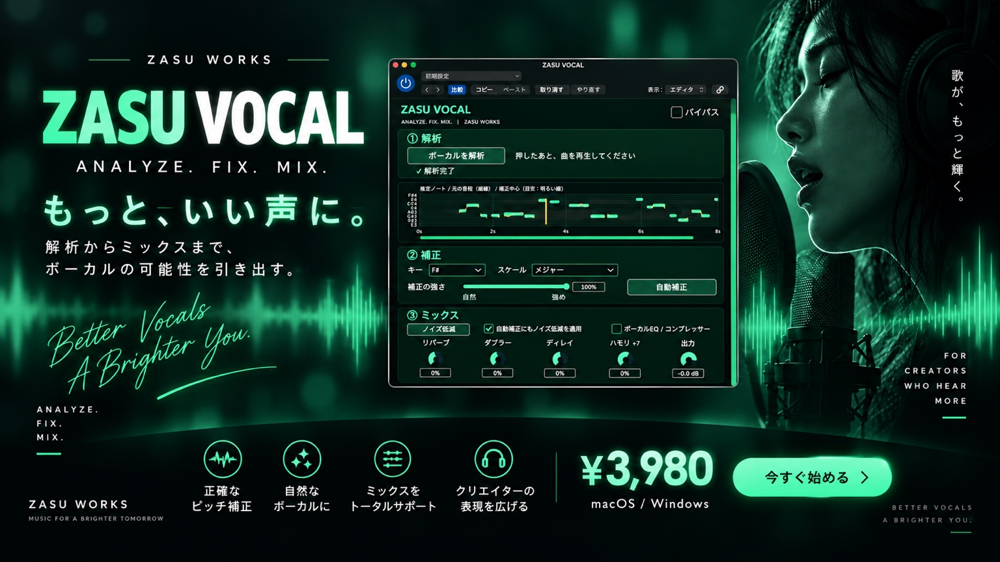
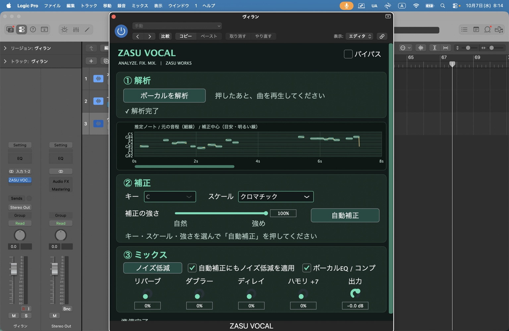

ANALYZE
解析
歌声を再生するだけで、Pitch / Noteを解析。
- 音程を解析
- Note / Blob表示
- 元Pitch軌跡を可視化
- どこをどう歌っているか目で確認
VOCAL PLUGIN / v1.0.0
ANALYZE. FIX. MIX.
歌声を解析して、自然に補正して、そのまま仕上げる。
Logic Proなどの普段使っているDAWで使える
ボーカル専用プラグイン。
発売記念価格
¥3,980 （税込）
購入後、決済完了画面の案内からダウンロードできます。

THREE STEPS. ONE VOCAL.
見て、整えて、仕上げる。歌声のための3ステップ。
ANALYZE
歌声を再生するだけで、Pitch / Noteを解析。
FIX
Key / Scaleに合わせて、歌い方を残しながら自然に補正。
MIX
そのままボーカルを聴きやすく仕上げる。
PITCH / NOTE / BLOB
元のPitch軌跡とNote / Blob表示で、音程の動きを確認。
歌い方を見ながら、補正の強さを決められます。

FIX + NOISE REDUCTION
AUTO FIX後の補正済み音声にも、
Noise Reductionを適用できます。
音程の補正からノイズ低減、EQ・コンプ、空間づくりまで。
ひとつのプラグインで、歌声の仕上がりを追い込めます。
「自動補正にもノイズ低減を適用」に対応
FOR YOUR VOCAL WORKFLOW
QUICK START
Key / Scaleや補正の強さを変えた場合は、もう一度「自動補正」を押して反映します。StandaloneはリアルタイムFX向けです。解析と補正済み音声の再生は、対応DAW内で使用してください。
Key / Scaleは曲に合わせて指定します。標準の補正強度は70%。聴きながら好みに調整してください。
COMPATIBILITY
Audio Units (AU) / VST3 / Standalone
Apple Silicon / Intel
Universal Binary
ZASU-VOCAL-v1.0.0-macOS-Universal.dmg
VST3 / Standalone
Windows x64
ZASU-VOCAL-v1.0.0-Windows-Setup.exe
ZASU VOCAL v1.0.0はLogic ProでAU実機動作確認済みです。VST3はhost validation済み・VST3対応DAW向け。Cubase実機での確認は未実施です。
インストーラーの署名状態：現在のMac版はDeveloper ID署名・公証が未完了です。Windows版は未署名です。
FAQ
ありません。対応DAWのボーカルトラックへプラグインとして挿して使用します。
自然さを残す補正を重視し、標準値は70%です。強度は調整できます。元の歌唱や設定によって仕上がりは変わるため、聴きながら調整してください。
v1.0.0ではユーザーがKey / Scaleを指定します。
EQ / Compressor / Noise Reduction / Reverb / Delay / Doubler / Harmonyなどでボーカルを整えられます。
macOSはAU / VST3 / Standalone、Apple Silicon・Intel Universal Binaryに対応。WindowsはVST3 / Standalone、x64に対応します。ZASU VOCAL v1.0.0はLogic ProでAU実機動作確認済みです。VST3はhost validation済みで、VST3対応DAW向けです。Cubase実機での動作確認は未実施です。
FINISH YOUR SOUND
ZASU VOCAL → ZASU LOUD
さらに最終音圧まで仕上げたい場合は、ZASU LOUDへ。
ZASU LOUDを見るZASU VOCAL / v1.0.0
発売記念価格
¥3,980 （税込）
購入後、決済完了画面の案内からダウンロードできます。
macOS / Windows対応
購入者都合による決済後の返品・キャンセル・返金は原則受け付けていません。重複決済や配布不備などは個別に対応します。詳しくは特商法表示をご確認ください。
下記の特商法表示・利用規約はZASU WORKSの既存正式ページ（ZASU LOUD向け）です。